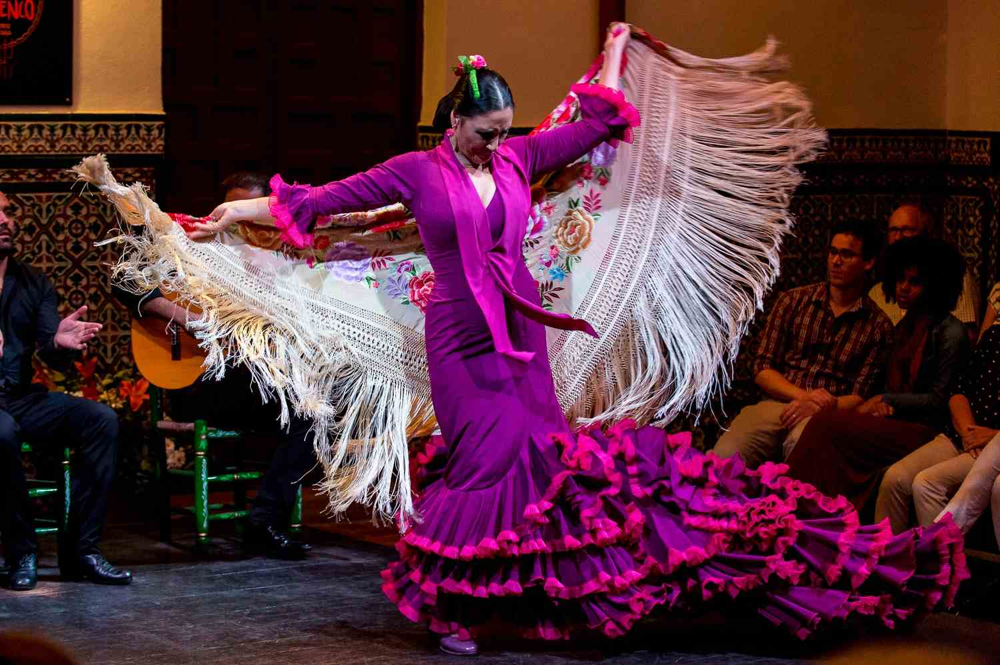
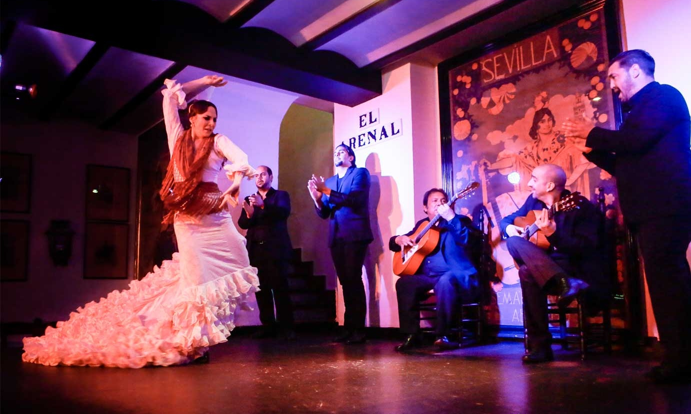
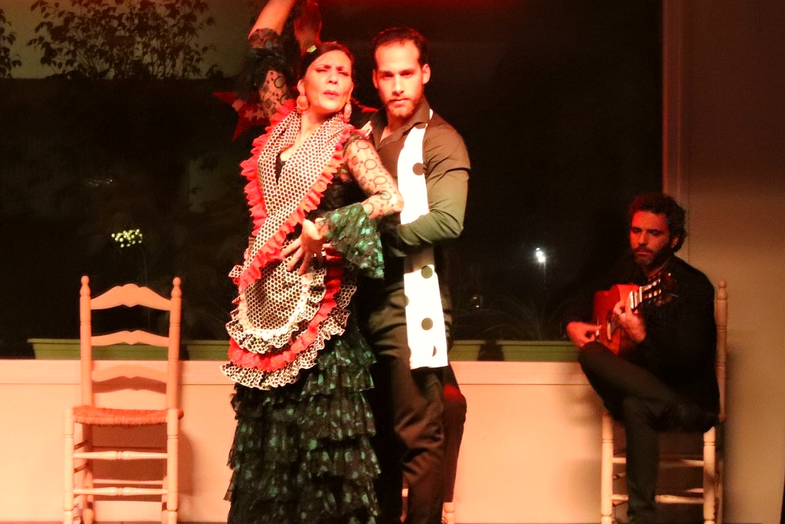
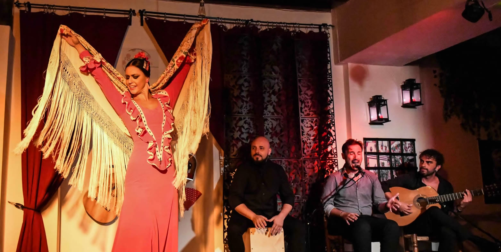
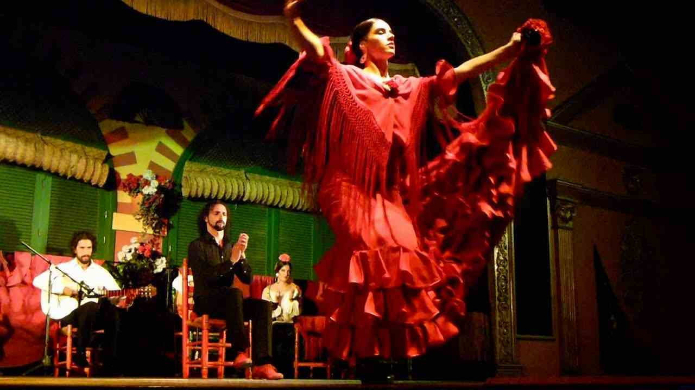
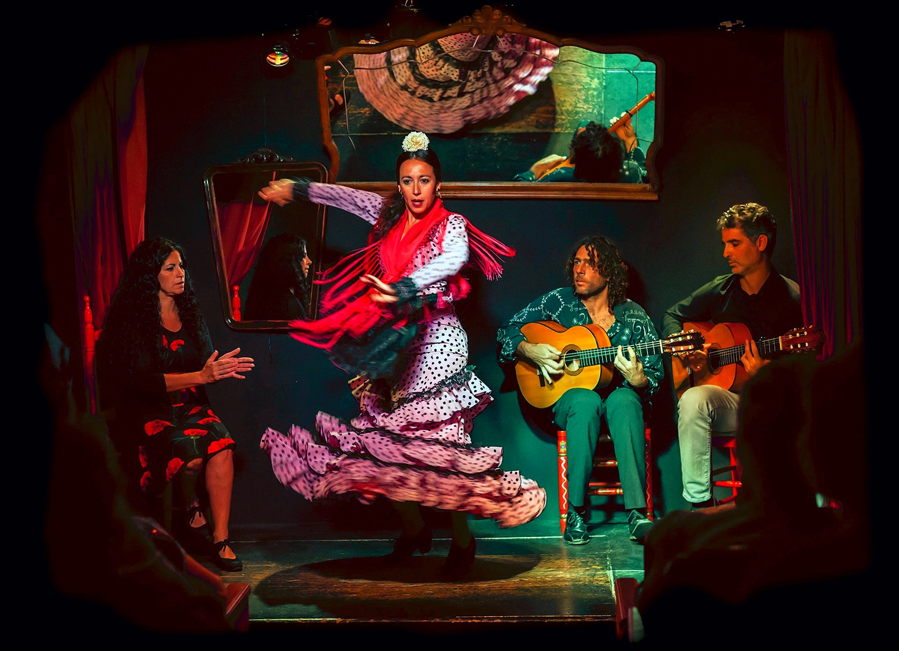
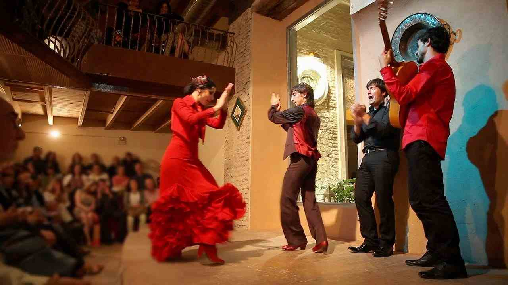
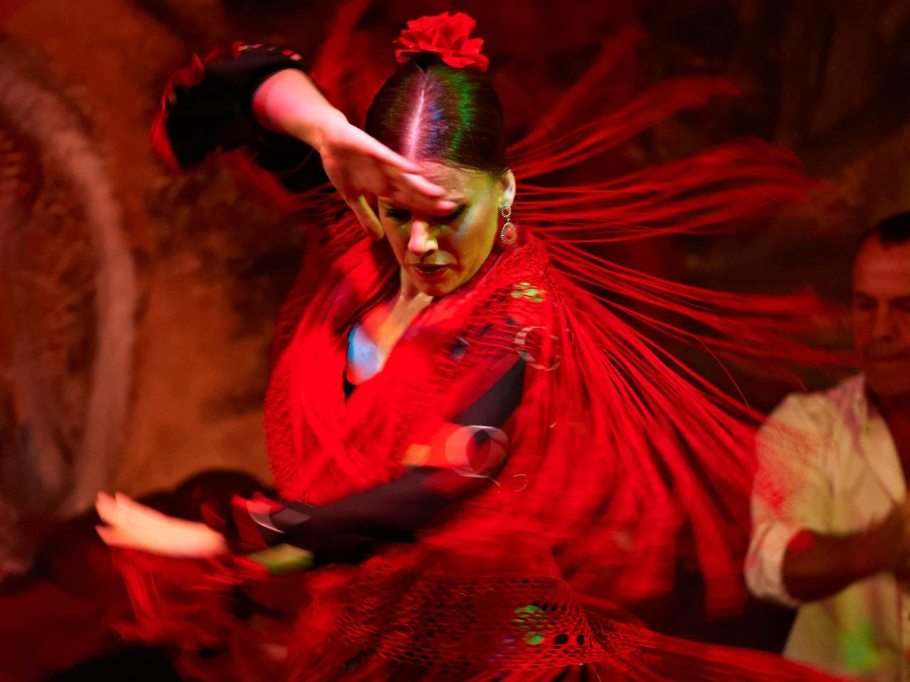
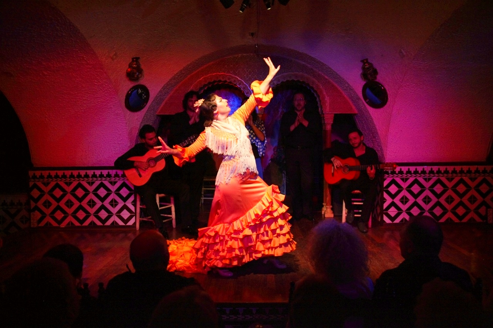

The 10 most authentic flamenco performances in Seville.
Visiting Seville without seeing flamenco first-hand is missing part of the Spanish and Sevillian culture. Many people have heard of flamenco but are not really sure what it is like. Seeing a true performance live is a once-in-a-lifetime experience — the intense movement, the vibrant and energetic music.
Below is our list of the best flamenco performances in Seville, with addresses and what each venue is actually like. Make sure you book one.
In short
- —Shows generally run about an hour, most with two passes an evening.
- —The smallest rooms — Casa del Flamenco, CasaLa Teatro, Los Gallos — give the most intense experience.
- —Book ahead. The intimate venues seat between 28 and 100 people and sell out.
- —UNESCO declared flamenco Intangible Cultural Heritage of Humanity in 2010.
01
La Casa del Flamenco
Every night there is a flamenco show in the inner courtyard of this 15th-century palace-house in the Jewish quarter of Santa Cruz. Here simplicity is a virtue: a small tablao with four chairs — singer, guitarist and two bailaores — and comfortable scissor seats surrounding it on all three sides, in the charm of a column patio with the typical tiles and flowers, barred doors and windows.
The show lasts about an hour and is done with ambient sound, so you feel the music without decoration and hear the vibration of the taconeo.

02
El Tablao el Arenal
Personally this is my favourite tablao performance. If you want to see a quality flamenco show, El Arenal is one of the most classic venues in Seville, and in more than forty years of history it has managed to reinvent itself, offering a professional service without giving up the best flamenco vibes or the spontaneity of its live shows.
It sits in the Arenal neighbourhood, very close to the Maestranza bullring. There are two shows a day and you can have dinner at the first. The building dates from the 17th century but is completely renovated, and inside it is surprisingly comfortable — the views of the stage are good from any table. There are cheaper tablaos, but here you get more artists on stage and more variety of cante, Spanish guitar and dance.

03
Tablao Los Gallos
One of the oldest tablaos in Seville, running since 1966, and it has aged without losing strength — gaining prestige and adding sediment to the art you breathe on its walls.
Here you find pure and traditional flamenco: guitar, voice and dance. The dancer captivates you from the first moment with a contagious dedication. Los Gallos is a very small tablao, which is a shame, because it is always full and can feel overwhelming.
04
La Cantaora
Set in the heart of the Andalusian capital, in an authentic environment that helps you connect with the purest flamenco atmosphere. The peculiarity of Tablao Flamenco La Cantaora is the presence of the festero, a complete artist who sings and dances while interpreting 19th-century palos.

05
Flamenco Andalusí Sevilla
This tablao has everything you need for an intimate and exclusive show in the historic centre: the unmistakable sound of the Spanish guitar, the claw and energy of the taconeo, the art and delicacy of flamenco dance, and the strength of the cajón, in an elegant setting.
A cold Manzanilla from Sanlúcar, local wine or frozen sangria is served as a courtesy before you go in. A ten-minute film explains flamenco, its history and its styles before the show starts, and afterwards you can talk to the artists.

06
El Palacio Andaluz
Emilio Ramírez 'El Duende' is the first bailaor and artistic director. With him, up to twenty artists string together alegrías, tarantos, seguiriyas, soleás and bulerías. The result is a tour through the flamenco styles, and their emotions and rhythms, for anyone who wants to understand the culture behind them.
The show has been broadcast on TVE Internacional, so do not be surprised to find a lot of visitors discovering flamenco for the first time. But you will also see the most expert in the room react, appreciating the nuances of each performance.

07
CasaLa Teatro
A charming stage taking over two stalls of the traditional Triana market, with an intimate show for only 28 people. The seats are recycled from a cinema and the surroundings are the food stalls themselves, which makes it unlike anywhere else in the city.
The stage is tiny and becomes large thanks to the artists on it, who manage to make the hair stand on end. It does not matter if you are not a great flamenco fan — you will be on your feet for the final applause. This is far removed from the typical tourist show. One hour of singing and dancing, two passes daily at 18:30 and 20:00.

08
Casa de la Memoria
The first thing that catches your attention is the setting: the old stables of the Palace of the Countess of Lebrija, dating from the 16th century and restored following the structure of a traditional Sevillian courtyard house.
A traditional show of singing, dancing and guitar is presented on this stage — the chance to see the purest flamenco in its different styles. Classic does not mean inaccessible; if you let yourself go you will enjoy it with no knowledge of flamenco at all. The artists change every night, so you never quite know who you will get, but all of them are of a high level and many have won competitions.
The second floor houses a museum with temporary exhibitions related to the culture of the region, and a shop with Andalusian and Sephardic crafts.

09
Museo del Baile Flamenco
The tablao is part of the Flamenco Dance Museum, an interactive museum covering the history of flamenco dance from its origins to today, founded by the celebrated bailaora Cristina Hoyos. Alongside the show you can see classic posters, the high-heeled shoes the dancers use and the ornaments of the flamenco dress.

10
Casa de la Guitarra
José Luis Postigo holds two national flamenco guitar awards and runs the Casa de la Guitarra with devotion and good work. This is much more than a tablao: it is a temple of guitar, singing and dance. The show takes a traditional, purist approach while remaining accessible to the uninitiated, because the emotion built in each performance is easy to catch.
If the technical side of flamenco interests you, admission includes the Guitar Museum — a collection of more than sixty instruments from the last three centuries.

A brief history of flamenco
Flamenco is a traditional style of music and dance from Andalucía, and although its origins are not entirely clear, it is bound up with the gitano community, which has been fundamental to its development and evolution.
It should not be confused with Andalusian folklore, such as sevillanas. Flamenco departs from those traditional forms and has become a cult art without losing its popular character — a hallmark of Seville and a great attraction in its own right.
In 2010 UNESCO declared flamenco Intangible Cultural Heritage of Humanity. It is now so widespread that it arouses more interest abroad than in Spain itself: most students in the flamenco schools are foreigners, and Japan is considered the second homeland of the genre, with 60,000 people studying in 650 academies across the country.
If you would rather have the evening arranged for you, we run tapas and a flamenco performance together — three bars in the historic centre and a one-hour show in the patio of an 18th-century palace. It can also be done privately, with Gunvor guiding, and shaped around what you want to eat.
Choosing well
- —Turning up without a booking. The small rooms sell out, and those are the good ones.
- —Choosing the biggest venue. More seats usually means less intensity, not more.
- —Booking a dinner show for the food. Eat before or after; go for the flamenco.
- —Assuming every show is the same. A purist tablao and a staged spectacle are different evenings entirely.
- —Photographing during the performance. Most venues do not allow it, and it breaks the room.
Frequently asked questions
{{ f.q }}+
{{ f.a }}
Written by
Gunvor Guttormsen
Licensed tour guide · Seville
Gunvor is an officially licensed guide based in Seville and the founder of Flavors of Andalucia. She guides in English and Norwegian, and also in Swedish and Danish, and has spent years walking the markets, bodegas and back streets she writes about here.
More about Gunvor